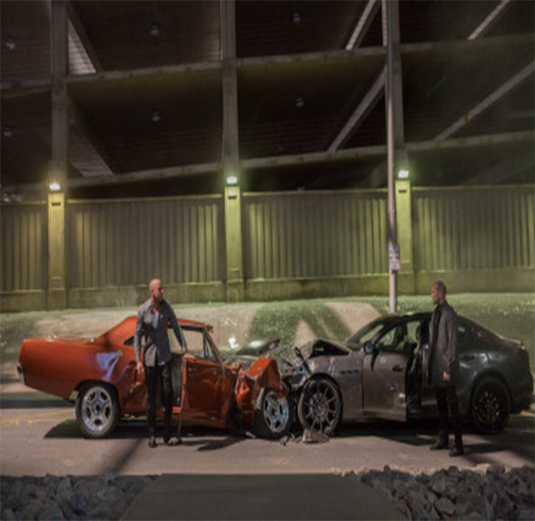

Directed by James Wan, it was released in 2015. The film became one of the most emotional in the series, interspersed with tributes to the late actor Paul Walker and a moving farewell to his character, Brian O'Connor. After the events of the previous game, Dominic Toretto and his team continue their adventures. However, their peaceful lives are shattered by an avenger named Ian Shaw. Ian is Owen Shaw's older brother, and his goal is to get back at the Dominica team for beating Owen in the previous game, resulting in his disability.
Meanwhile, Owen Shaw's former team, the leader of a rogue group called Deckard, is also searching for a dangerous technology called Aegis that could blind governments and organizations around the world. Mr. Deckard's plan is to sell the technology to the highest bidder, thereby fulfilling his ambition.
In order to stop Ian and Deckard's plot, Dominica and his team team team up again, launching a global chase and confrontation with them. In the process, they encountered a thrilling vehicle chase, intense gun battles and intense combat, the scene was spectacular. It is worth mentioning that the film was made with the unexpected death of Paul Walker. The film crew decided to use digital technology and his brother Cass Walker to complete his scenes, as a tribute to Paul Walker, and created a fitting ending for the character Brian O'Connor.